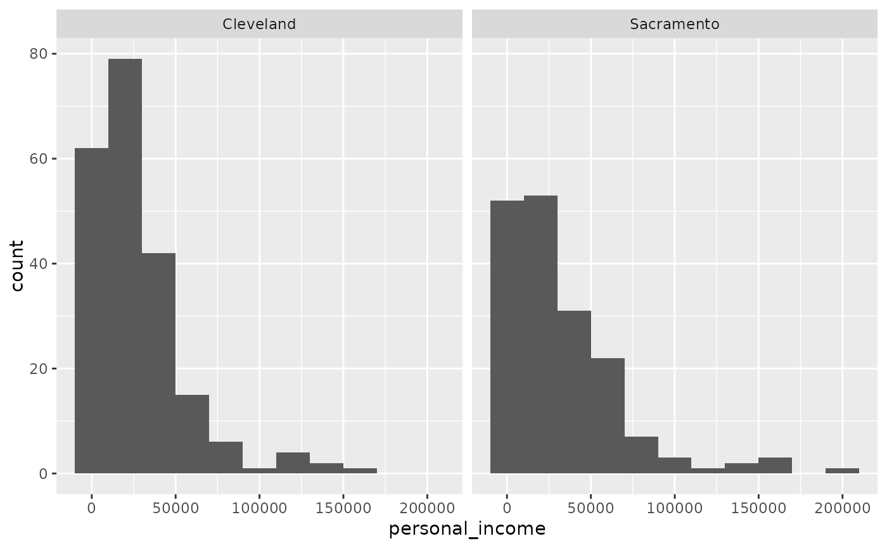

Data on a sample of 500 people from the Cleveland, OH and Sacramento, CA metro areas.
cle_sac
A data frame with 500 observations representing people on the following 8 variables.
Year the data was collected.
State where person resides.
City.
Age of the person.
Gender.
Ethnicity.
Marital status.
Personal income.
library(ggplot2) ggplot(cle_sac, aes(x = personal_income)) + geom_histogram(binwidth = 20000) + facet_wrap(~city)#> Warning: Removed 113 rows containing non-finite values (stat_bin).